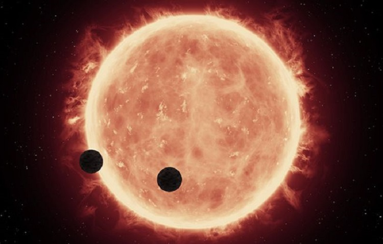

سیاره قابل سکونت
فرارو- یک ستاره کوتوله سرخ که تنها ۱۰۵ سال نوری از ما فاصله دارد، ممکن است میزبان حداقل یک جهان قابل سکونت باشد. دانشمندان در مداری نزدیک به دور این ستاره سرد و کم نور، دو سیاره فراخورشیدی صخرهای را پیدا کردهاند که یکی از آنها در چنان فاصلهای از خورشید خود قرار دارد که به راحتی میتواند حیات را در خود شکل دهد
آیا میتوان روی این سیارات زندگی کرد؟
به گزارش فرارو ، این دو سیاره فراخورشیدی در نتیجه مشاهدات تلسکوپ شکار
سیاره فراخورشیدی تس ناسا کشف شدند. این تلسکوپ وقتی که به یک ستاره
کوتوله قرمز کوچک به نام ال پی ۸۹۰-۹ خیره شده بود، فرورفتگیهای ضعیف و
منظمی در نور ستاره مشاهده کرد که نشان از وجود سیاره فراخورشیدی بود
با این حال دادههای این تلسکوپ برای تأیید وجود این سیارات کافی نبود و
دانشمندان باید ابزارهای دیگری را مورد استفاده قرار میدادند
لیتیتیا دلرز، ستاره شناس دانشگاه لیژ بلژیک، توضیح میدهد: «بررسیهای
بیشتر در خصوص ستارگان نسبتا سرد، مانند تی او آی-۴۳۰۶، که بیشتر نور خود
را در مادون قرمز نزدیک ساطع میکنند، بسیار مهم است». به همین دلیل او و
تیمش از تلسکوپهای کنسرسیوم اسپکلوز که به طول موجهای نزدیک به فروسرخ
حساس است، استفاده کردند. دادههای ترانزیت بهدستآمده در این مشاهدات
وجود سیاره فراخورشیدی به نام ال پی ۸۹۰-۹بی را تأیید کرد
سپس تیم به دنبال سیارات فراخورشیدی که احتمالاً توسط تلسکوپ تس دیده
نشده بود، گشتند و دنیای دومی را یافتند که کمی دورتر از ال پی ۸۹۰-۹بی
است. این سیاره فراخورشیدی با نام ال پی ۸۹۰-۹سی دارای دوره مداری ۸.۴
روزه است
دادههای دیگر، از جمله اندازهگیریهای سرعت شعاعی که کشش گرانشی یک
سیاره فراخورشیدی بر یک ستاره را تعیین میکند و در نتیجه جرم آنها را
استخراج میکند، به تیم اجازه داد تا این دو سیاره فراخورشیدی را با
جزئیات بیشتری توصیف کنند

ین دادهها نشان میدهد ال پی ۸۹۰-۹بی حدود ۱.۳۲ برابر قطر زمین و تا ۱۳
برابر جرم آن است و ال پی ۸۹۰-۹سی نیز حدود ۱.۳۷ برابر قطر زمین و تا ۲۵
برابر جرم آن است. این اندازهگیریها با چگالی جهانهای صخرهای مانند
زمین، مریخ و زهره، شباهت زیادی دارد. این بدان معناست که سیارات
فراخورشیدی را میتوان به عنوان ابرزمینها طبقه بندی کرد
ما در این میان موضوع دیگری نیز وجود دارد که اهمیت به مراتب بیشتری دارد
و آن فاصله این سیارات نسبت به ستاره خود است. در موضوع سیارات
فراخورشیدی و البته جستجو برای جهانهای قابل سکونت، این موضوع مهمترین
شاخصهای است که دانشمندان به دنبال آن هستند
سیاره الپی ۸۹۰-۹سی اگرچه در مقایسه با زمین، بسیار به ستاره خود نزدیک
است، اما نکته جالب توجه اینجاست که این ستاره بسیار سردتر از خورشید
ماست و این بدان معناست که این سیاره فرا خورشیدی در مداری قرار دارد که
دانشمندان آن را «منطقه قابل سکونت» مینامند. به گفته محققان، پس از
سیستم تراپیست، این دومین جهان بالقوه قابل سکونت است که تاکنون کشف شده
است